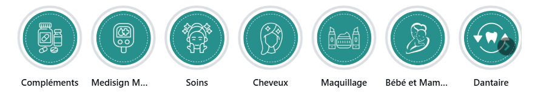

noonoot.officiel
✓Parapharmacie & BeautéNooNoot
30posts
487followers
20following
Pharmacy / DrugstoreParapharmacie 🇲🇦
Produits santé & beauté MA
Livraison partout au Maroc 🚚
Commandez dès maintenant 🛒

المحتوى
اضغط على أي منشور لاكتشاف التجربة الكاملة.